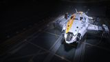

Макс. скорость / с форсажем
235 / 338 м/с
Chieftain сочетает тяжёлую базовую броню и три военных отсека с лучшей манёвренностью среди защищённых средних кораблей. Поворачивает как корабль гораздо меньшего размера и выдерживает обстрел. Один из самых выгодных бойцов и первоклассная платформа против таргоидов. До лидеров дуэлей и залпового урона не дотягивает лишь по предельному урону в секунду.

Оценка пригодности корабля от 1 до 100 учитывает его полностью улучшенную сборку и сравнивает её с другими кораблями в этой роли. Подробнее: как оцениваются корабли.
Alliance Chieftain доказал, что средний корабль может быть крепким и поворотливым. Он построен на шасси Альянса, общем с Challenger и Crusader. Тяжёлая базовая броня, три военных отсека под усиления и редкая для защищённого среднего корабля манёвренность позволяют перекручивать противников вдвое легче его.
Два больших гнезда — основа комплекта из шести. Военные отсеки позволяют нарастить прочность корпуса, оставив щиты первым рубежом. При цене меньше 19 млн кр. это лишь часть стоимости Fer-de-Lance или Python Mk II, хотя в затяжном бою он не уступает обоим. Кроме того, это один из лучших кораблей против таргоидов, поэтому его любят пилоты AX.
Зоны конфликта, опасные зоны добычи ресурсов, задания на уничтожение пиратов и особенно бои с таргоидами. Везде, где нужен доступный, крепкий и манёвренный боец, способный оставаться в бою и держать цель в прицеле.
Четыре преимущества Chieftain в среднем боевом классе:
По предельному урону в секунду он уступает четырём большим орудиям Python Mk II и огромному гнезду Fer-de-Lance. Щиты скромные: основная защита приходится на корпус. В дуэли его обойдёт FDL, а по залповому урону — Mamba. Зато по манёвренности и выносливости он обходит многих и стоит намного меньше. Вместо рекордного урона вы получаете баланс, прочность и низкую цену.
Первоклассная манёвренность, военные отсеки под броню и цена меньше 19 млн без требования к рангу дают 88. До тройки лидеров не хватает предельного урона и щита: около 162 МДж в сборке с упором на корпус.
Итоговая оценка 88/100 основана на приоритетных критериях боевой роли. У каждого критерия есть вес (его доля из 100). Баллы по нему зависят от того, как корабль показал себя на фоне остальных. Сумма баллов даёт итоговую оценку.
| Критерий | Баллы | Почему столько |
|---|---|---|
| Оружейные крепления | 25/30 | Шести гнёзд (два больших, одно среднее, три малых) хватает на любую цель в зоне добычи или конфликта. Но предельный урон ниже, чем у Python Mk II (90) с четырьмя большими гнёздами и Fer-de-Lance (93) с огромным. Это главный предел оценки. |
| Распределитель энергии | 9/10 | Распределитель класса 6 питает два больших орудия и форсаж. Класс A с «Усиленной зарядкой» и «Сверхпроводящими каналами» держит заряд оружейного контура для двух больших многоствольных пушек. Хорошо для среднего бойца, но не уровень класса 7 и выше. |
| Щит | 12/15 | Базовый щит — всего около 162 МДж, после доработок около 650 МДж. Скромно, потому что основная защита — корпус. Это самый слабый показатель среди соперников, поэтому в прямой дуэли побеждает FDL. |
| Броня и отсеки | 14/15 | Тяжёлая базовая броня 504 и три военных отсека класса 4 дают эффективную защиту свыше 3 000. Дополнительные 6·5·4·2·2·1 оставляют место под усиления корпуса и модулей и банки щита. Живучесть на высоте, а военные отсеки не занимают дополнительные. |
| Манёвренность | 19/20 | Лучший по манёвренности среди крепких средних кораблей, особенно после «Грязной настройки» (235/338 м/с, форсаж около 420 при массе корпуса 400 т). Держит орудия на цели и перекручивает корабли вдвое легче. Главное преимущество модели. |
| Вспомогательные модули и гибкость | 9/10 | Четыре вспомогательных гнезда под усилители, дипольные отражатели и теплоотводы, отсутствие требований к рангу и разрешению, цена около 18,6 млн кр. Один из самых доступных и гибких средних бойцов и отличная платформа с оснащением Стражей или AX. |
| Взвешенный итог | 88/100 | Эта сумма совпадает с общей оценкой корабля в этой роли. |
Вес критерия отражает приоритеты авторов гайда, а не формулу игры. Длина полосы показывает, какую долю от максимума корабль набрал по этому критерию. Подробнее: как оцениваются корабли.
Таблицы сравнивают корабли именно для бояи разделяют их по размеру посадочной площадки. Столбец Оружейные крепления показывает набор орудийных гнёзд, от которого зависит вооружение. Оценка пригодности от 1 до 100 такая же, как на остальных страницах.
| Корабль | Класс | Оружейные крепления | Плюсы и минусы | Оценка |
|---|---|---|---|---|
| Fer-de-Lance | Средняя | 1H 4M | Выше оценка; манёвренность; орудийные гнёздаБроня | 93 |
| Krait Mk II | Средняя | 3L 2M | Выше оценка; орудийные гнёзда; броняРаспределитель | 90 |
| Python Mk II | Средняя | 4L 2M | Выше оценка; орудийные гнёзда; распределительБроня | 90 |
| Mamba | Средняя | 1H 2L 2S | Выше оценка; распределитель; орудийные гнёздаБроня | 89 |
| Alliance Chieftain этот | Средняя | 2L 1M 3S | — отправная точка для сравнения | 88 |
| Alliance Challenger | Средняя | 1L 3M 3S | Броня; щитНиже оценка; манёвренность | 86 |
| Corsair | Средняя | 3L 3M | Распределитель; гибкостьНиже оценка; манёвренность | 85 |
| Federal Assault Ship | Средняя | 2L 2M | Распределитель; манёвренностьНиже оценка; щит | 84 |
| Python | Средняя | 3L 2M | Распределитель; гибкостьНиже оценка; манёвренность | 83 |
| Federal Gunship | Средняя | 1L 4M 2S | Распределитель; броняНиже оценка; манёвренность | 82 |
| Alliance Crusader | Средняя | 1L 2M 3S | Распределитель; броняНиже оценка; манёвренность | 80 |
| Federal Dropship | Средняя | 1L 4M | Броня; орудийные гнёздаНиже оценка; манёвренность | 76 |
| Krait Phantom | Средняя | 2L 2M | Гибкость; манёвренностьНиже оценка; броня | 74 |
Оценены 13 средних боевых кораблей; лидирует Fer-de-Lance (93). Все соперники садятся на тех же площадках: сравнивайте в первую очередь с ними.
| Корабль | Класс | Оружейные крепления | Плюсы и минусы | Оценка |
|---|---|---|---|---|
| Federal Corvette | Большая | 2H 1L 2M 2S | Выше оценка; орудийные гнёзда; распределительЩит | 98 |
| Imperial Cutter | Большая | 1H 2L 4M | Выше оценка; распределитель; щитМанёвренность | 91 |
| Anaconda | Большая | 1H 3L 2M 2S | Распределитель; щитМанёвренность | 88 |
| Imperial Clipper | Большая | 2L 2M | Манёвренность; распределительНиже оценка; орудийные гнёзда | 79 |
| Type-10 Defender | Большая | 4L 3M 2S | Орудийные гнёзда; броняНиже оценка; манёвренность | 78 |
Оценены пять больших боевых кораблей; лидирует Federal Corvette (98). Им нужны большие площадки и бюджеты. Они сильнее по цифрам, но относятся к другому классу.
| Корабль | Класс | Оружейные крепления | Плюсы и минусы | Оценка |
|---|---|---|---|---|
| Kestrel Mk II | Малая | 3L 2S | Орудийные гнёзда; гибкостьНиже оценка; броня | 85 |
| Vulture | Малая | 2L | Манёвренность; щитНиже оценка; броня | 80 |
| Cobra Mk V | Малая | 3M 2S | Гибкость; орудийные гнёздаНиже оценка; распределитель | 78 |
| Imperial Courier | Малая | 3M | Манёвренность; щитНиже оценка; броня | 70 |
| Viper Mk IV | Малая | 2M 2S | Броня; распределительНиже оценка; манёвренность | 66 |
| Diamondback Explorer | Малая | 1L 2M | Гибкость; манёвренностьНиже оценка; броня | 65 |
| Viper Mk III | Малая | 2M 2S | Манёвренность; орудийные гнёздаНиже оценка; броня | 63 |
| Diamondback Scout | Малая | 2M 2S | Гибкость; броняНиже оценка; щит | 60 |
| Cobra Mk III | Малая | 2M 2S | Манёвренность; распределительНиже оценка; щит | 58 |
| Eagle Mk II | Малая | 3S | Манёвренность; орудийные гнёздаНиже оценка; щит | 55 |
| Imperial Eagle | Малая | 1M 2S | Манёвренность; орудийные гнёздаНиже оценка; гибкость | 54 |
| Cobra Mk IV | Малая | 2M 3S | Орудийные гнёзда; броняНиже оценка; манёвренность | 44 |
| Sidewinder Mk I | Малая | 2S | Манёвренность; гибкостьНиже оценка; орудийные гнёзда | 40 |
Оценены 13 малых боевых кораблей; лидирует Kestrel Mk II (85). Они дешевле, садятся на меньшие площадки и уступают по цифрам, но это другой класс.
За примерно 18,6 млн кр. Chieftain предлагает поразительные боевые возможности, не требуя ранга или разрешения. Полная боевая сборка с доработками в трёх военных отсеках стоит заметно меньше пустого дорогого среднего бойца.
Благодаря цене многие держат один для боёв с таргоидами, другой для зон конфликта и добычи, или летают на нём как на первом серьёзном бойце, ещё не попробовав Python Mk II или FDL.
Ни один средний боец не даёт столько возможностей за кредит. Chieftain часто рекомендуют как первый настоящий боевой корабль именно потому, что его возможности выше цены.
Alliance Chieftain — готовый корабль набора AX Combat Jumpstart за ARX, рассчитанного на бои с таргоидами. Штатные модули продаются за 0 кр.; хранить и переносить их нельзя. Доработка основных штатных модулей на месте сохраняет бесплатный выкуп.
В готовом AX Jumpstart устанавливайте оружие AX и модули Стражей в пустые отсеки, а основные модули дорабатывайте на месте. Не снимайте штатное оснащение.
| Набор | AX Combat Jumpstart (Alliance Chieftain) |
|---|---|
| Назначение | Бой с таргоидами (AX) |
Chieftain Jumpstart оснащён для боёв с таргоидами. Это естественный выбор для одного из лучших средних кораблей AX. Ставьте новое оснащение в пустые отсеки и сохраните бесплатный выкуп.
Боевая сборка с упором на корпус и три военных отсека. Начальная сборка только покупная; класс A — основа для боёв; инженерная версия добавляет типовые боевые доработки и тяжёлые усиления. В варианте AX оружие заменяют на модули Стражей или оружие AX.
| Отсек | Начальная · только покупка | Класс A · без улучшений | С инженерными улучшениями | Примечания |
|---|---|---|---|---|
| Оружейные крепления | ||||
| Большое крепление 1 | 3E Импульсный лазер (на подвижной установке) | 3C Многоствольная пушка (на подвижной установке) | G5 Форсированная + Автозарядка | Главное большое гнездо: одна форсированная многоствольная пушка с коррозионными снарядами снижает сопротивление брони для всего вооружения. |
| Большое крепление 2 | 3C Многоствольная пушка (на подвижной установке) | 3C Многоствольная пушка (на подвижной установке) | G5 Форсированная + Автозарядка | Второе большое гнездо: многоствольная пушка. Автозарядка позволяет основным орудиям стрелять без пауз на перезарядку. |
| Среднее крепление 1 | 2F Импульсный лазер (на подвижной установке) | 2D Лучевой лазер (на подвижной установке) | G5 Эффективный + Отвод тепла | Лучевой лазер на подвижной установке снимает щиты; Отвод тепла снижает нагрев при длительной стрельбе. |
| Малое крепление 1 | 1G Многоствольная пушка (на подвижной установке) | 1G Многоствольная пушка (на подвижной установке) | G5 Форсированная + Коррозионные снаряды | Малая многоствольная пушка наносит дополнительный кинетический урон, а автозарядка поддерживает огонь. |
| Малое крепление 2 | — | 1G Импульсный лазер (на подвижной установке) | G5 Эффективный + Нарушение работы модулей | Эффективный импульсный лазер недорого занимает малое гнездо; фазовая последовательность пропускает часть урона сквозь щит. |
| Малое гнездо 3 | — | 1G Импульсный лазер (на подвижной установке) | G5 Эффективный + Нарушение работы модулей | Второй эффективный импульсный лазер: небольшая нагрузка и нагрев, пока основные орудия добивают цель. |
| Внешние крепления | ||||
| Крепление 1 | 0A Усилитель щита | 0A Усилитель щита | G5 Усиленная конструкция + Суперконденсаторы | Первый усилитель щита; «Усиленная конструкция» недорого повышает запас МДж двухпоточного щита. |
| Крепление 2 | — | 0I Пусковая установка дипольных отражателей | G1 Дополнительный боезапас (без экспериментального эффекта) | Необязательно, низкий приоритет: увеличение боезапаса даёт больше залпов дипольных отражателей. Дипольные отражатели сбивают наведение подвижных и турельных орудий. |
| Крепление 3 | — | 0I Теплоотводная катапульта | G1 Дополнительный боезапас (без экспериментального эффекта) | Необязательно. Дополнительный боезапас даёт больше теплоотводов. Они снимают нагрев при скрытном ходе и помогают сбросить температуру. |
| Крепление 4 | — | 0A Усилитель щита | G5 Усиленная конструкция + Суперконденсаторы | Второй усиленный усилитель щита занимает последнее гнездо: это самый дешёвый способ нарастить щит. |
| Основные модули | ||||
| Обшивка | Лёгкий сплав | Военный композит | G5 Усиленная конструкция + Глубокое бронирование | |
| Энергетическая установка | 6E Энергетическая установка | 6A Энергетическая установка | G5 Форсированная + Рассеивание тепла | Форсирование даёт запас мощности для орудий, щита и банков, а «Рассеивание тепла» отводит лишний нагрев. |
| Маневровые двигатели | 6E Маневровые двигатели | 6A Маневровые двигатели | G5 Грязная настройка двигателей + Форсированные двигатели | Класс A с улучшением «Грязная настройка» сохраняют главное преимущество Chieftain — манёвренность. |
| Рамочно-сместительный двигатель (FSD) | 5E Рамочно-сместительный двигатель (FSD) | 5A Рамочно-сместительный двигатель (FSD) | G3 Увеличенная дальность + Управление массой | Класс A, чтобы быстрее долетать до боёв и сдачи наград. Доработки дальности уровня 3 достаточно: рекордный прыжок не нужен. |
| Система жизнеобеспечения | 5E Система жизнеобеспечения | 5D Система жизнеобеспечения | G5 Облегчение (без экспериментального эффекта) | Класс D уменьшает массу, а Облегчение снижает её ещё сильнее. У системы жизнеобеспечения нет экспериментального эффекта. |
| Распределитель энергии | 6E Распределитель энергии | 6A Распределитель энергии | G5 Усиленная зарядка + Сверхпроводящие каналы | Класс A для двух больших орудий и форсажа; «Усиленная зарядка» и «Сверхпроводящие каналы» поддерживают оружейный контур. |
| Сенсоры | 4E Сенсоры | 4D Сенсоры | G5 Облегчение (без экспериментального эффекта) | Понизьте до класса D и облегчите: лишняя дальность сенсоров в бою не нужна, зато масса меньше. |
| Топливный бак | 4C Топливный бак | 4C Топливный бак | (нет чертежа улучшения) | Штатный бак класса C. Вместимость фиксирована и не меняется инженерными улучшениями. |
| Военные отсеки | ||||
| Военный отсек 1 | 4D Усиление корпуса | 4D Усиление корпуса | G5 Усиленная конструкция + Глубокое бронирование | Первый военный отсек: усиленная защита корпуса даёт наибольшую прибавку к эффективной броне за свою цену. |
| Военный отсек 2 | — | 4D Усиление корпуса | G5 Усиленная конструкция + Глубокое бронирование | Второй усиленный усиление корпуса. Военные отсеки не занимают дополнительные, так что броня почти ничего не стоит по отсекам. |
| Военный отсек 3 | — | 4D Усиление модулей | (нет чертежа улучшения) | Усиление модулей распределяет урон пробитий между внутренними модулями; не дорабатывается. |
| Дополнительные отсеки | ||||
| Размер 6 | 6E Генератор щита | 6C Генератор двухконтурного щита | G5 Укреплённый + Увеличенная ёмкость | Двухпоточный щит быстро восстанавливается под огнём (этот размер доступен до класса C). Усиление повышает запас МДж, увеличенная ёмкость добавляет ещё. |
| Размер 5 | 5E Грузовой стеллаж | 5A Банк щита | G4 Специализированный (без экспериментального эффекта) | Необязательно, низкий приоритет: специализация снижает всплеск нагрева и потребления. Быстро восстанавливает щит в аварийной ситуации. |
| Размер 4 | — | 4D Усиление корпуса | G5 Усиленная конструкция + Глубокое бронирование | Дополнительное усиление защита корпуса в обычных отсеках. Прибавки брони складываются линейно. |
| Размер 2 | — | 2D Усиление модулей | (нет чертежа улучшения) | Усиление модулей защищает основные модули в малом дополнительном отсеке; не дорабатывается. |
| Размер 2 | — | 2A Банк щита | G4 Специализированный (без экспериментального эффекта) | Необязательно, низкий приоритет: специализация снижает всплеск нагрева и потребления. Быстро восстанавливает щит в аварийной ситуации. |
| Размер 1 | — | 1D Усиление корпуса | G5 Усиленная конструкция + Глубокое бронирование | Необязательно. Улучшение увеличивает площадь, которую покрывает каждый зонд при составлении карты планеты. |
| Планировщики и экспорт | ||||
| Открыть в Coriolis | открыть | открыть | открыть | Открывает сборку на coriolis.io. |
| Открыть в EDSY | открыть | открыть | открыть | Открывает сборку на edsy.org. |
| Скопировать SLEF | Копирует выбранную сборку в формате экспорта оснащения корабля (SLEF). | |||
Три военных отсека класса 4 с усиленной защитой корпуса и модулем усиления оборудования дают Chieftain его прочность. Они не конкурируют с щитом или грузом, поэтому защита почти бесплатна по отсекам.
Купите корабль (около 18,6 млн кр.). Пока оставьте штатный лёгкий сплав. Установите штатный 6E Генератор щита с одним 0A Усилитель щита, затем поставьте один 4D Усиление корпуса в первый военный отсек. Это сразу укрепит корабль.
Из покупного оружия берите подвижные установки: 3C Многоствольная пушка и 3E Импульсный лазер в большие гнёзда, 2F Импульсный лазер в среднее и 1G Многоствольная пушка в первое малое. Два остальных малых гнезда, лишние вспомогательные, второй и третий военные и пустые дополнительные отсеки оставьте незанятыми до класса A.
Даже с лёгким сплавом базовый корпус и первое усиление позволяют сразу лететь в зону добычи или конфликта.
Приоритет класса A для манёвренной сборки с упором на корпус:
Заполните три военных и дополнительные отсеки усилениями корпуса и Усиление модулей, добавьте второй 0A Усилитель щита, установку дипольных отражателей и теплоотвод, а также два банка щита (5A и 2A). В отсек размера 1 поставьте 1D Усиление корпуса, не сканер поверхности. Боевому кораблю нужна защита в каждом отсеке.
Не перегружайте корабль бронёй. Поставьте класс A на маневровых двигателей и сохраните преимущество в повороте, чтобы держать орудия на цели и заходить внутрь виража противника.
Типовая боевая схема с тяжёлыми усилениями в военных отсеках. Закрепите чертежи, чтобы применять уровни 1–5 удалённо, а за экспериментальными эффектами прилетайте лично.
| Модуль | Чертёж | Экспериментальный эффект | Инженер |
|---|---|---|---|
| Энергетическая установка (6) | Форсированная (G5) | Рассеивание тепла | Hera Tani |
| Маневровые двигатели (6) | Грязная настройка двигателей (G5) | Форсированные двигатели | Professor Palin / Mel Brandon |
| Многоствольные пушки | Форсированная (G5) | Коррозионные снаряды (одна) / автозарядка (остальные) | Tod McQuinn |
| Лучевые & импульсные лазеры | Эффективный (G5) | Отвод тепла (лучевой) / фазовая последовательность (импульсный) | Broo Tarquin |
| Распределитель энергии (6) | Усиленная зарядка (G5) | Сверхпроводящие каналы | The Dweller |
| Рамочно-сместительный двигатель (FSD) (5) | Увеличенная дальность (G3) | Управление массой | Felicity Farseer / Elvira Martuuk |
| Двухконтурный щит (6) | Укреплённый (G5) | Увеличенная ёмкость | Lei Cheung |
| Обшивка | Усиленная конструкция (G5) | Глубокое бронирование | Selene Jean |
| Усиление корпуса | Усиленная конструкция (G5) | Глубокое бронирование | Selene Jean |
| Усилители щита | Усиленная конструкция (G5) | Суперконденсаторы | Didi Vatermann |
Умеренная: стандартные боевые доработки уровня 5 и несколько усилений корпуса (Selene Jean). При полных запасах материалы нужно только потратить, не собирать. При необходимости уточните точный расход по чертежам.
Ориентировочные показатели для трёх сборок. Точный результат зависит от оснащения:
| Показатель | Начальная | Класс A | С инженерными улучшениями |
|---|---|---|---|
| Макс. скорость с форсажем | 338 м/с | 338 м/с | ~420 м/с |
| Манёвренность | отличное | отличное | превосходная |
| Эффективная броня | ~500 | ~1,500 | ~3,000+ |
| Щит (МДж) | ~230 | ~320 | ~650 |
| Урон в секунду при длительном огне | высокая | высокая | высокая |
Военный композит и заполнение военных отсеков примерно утраивают броню ещё до первого чертежа. Доработки поднимают эффективную броню до нескольких тысяч: усиленная конструкция и глубокое бронирование обшивки, усиления во всех отсеках вплоть до размера 1. Форсаж превышает 400 м/с, щит становится достойным, а скорость поворота сохраняется. Урон стабильно хорош, но главное здесь — живучесть и контроль боя.
Подойдёт любая опасная зона добычи или зона конфликта. Для AX ищите системы с активностью таргоидов или шпилями. Вокруг домашней базы бои в зонах и задания на уничтожение могут заодно улучшать отношения с Империей.
Alliance Chieftain — самый выгодный средний боец Elite Dangerous: манёвренный, как лёгкий корабль, прочный, как тяжёлый, и достаточно дешёвый, чтобы держать несколько. Не лидер по урону в секунду, но лучше поворачивает и дольше держится в бою, чем многие лидеры, а ещё отлично подходит для AX. Для большинства командиров это самая разумная боевая покупка.
Цифры в статье сверены авторами оригинала с источниками ниже.